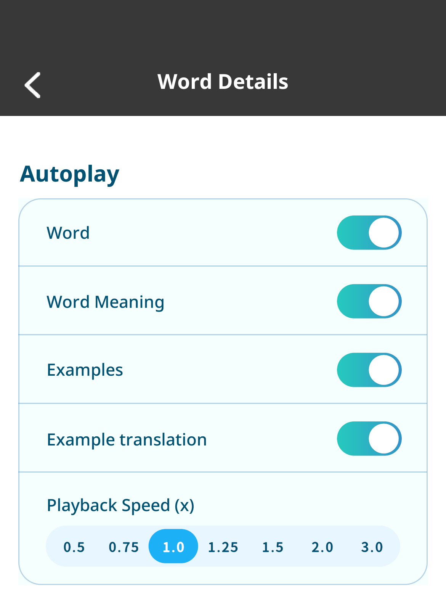
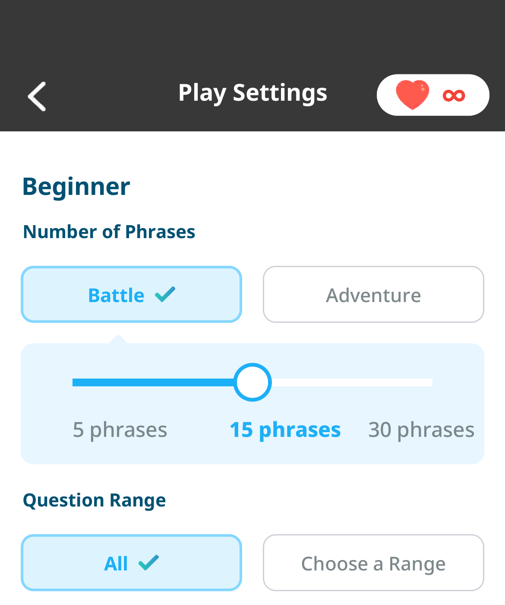

Better Auto-Play, and
Battles from
Your Phrasebook
2026/9/10 12:00
Hi, this is Kamiya, the developer of Motitan and Motispi.
With the update to v11.5.0, auto-play is improved in both Motitan and Motispi, and you can now play battles from your Motispi phrasebook.
Motitan and Motispi: Better Auto-Play
We made the following improvements to auto-play in word details and phrase details.
- You can now change the playback speed from 0.5x to 3.0x.
- Background playback is supported, so you can keep listening on the go even after closing the screen.

How to set it: Word Details > Gear icon > Playback Speed (x)
Motispi: Play Battles from Your Phrasebook
You can now play battles from your Motispi phrasebook.
- On the free plan, you can play battles and adventures from a phrasebook up to 3 times a day (separate from the wordbook limit).
- From "Play in Motispi" in a Motitan phrasebook's details, you can jump to Motispi and play.

How to play: Phrasebook > Phrasebook Details > Play Battle/Adventure > Play Settings > Battle
* After selecting "Battle", tap "Start".
We built this around two things: the comfort of learning even while on the move or with the screen closed, and the fun of using the expressions you've just learned in a battle right away.
Sou Kamiya, Developer